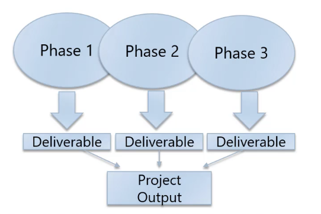
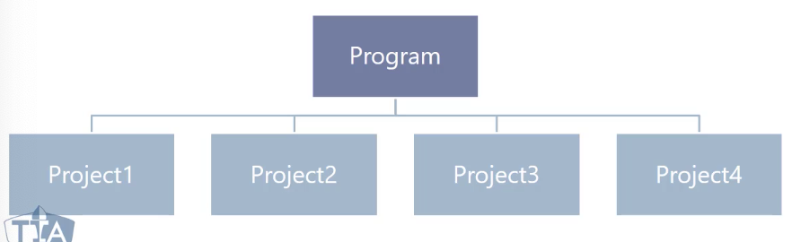

Welcome
This notebook contains my personal notes in preparation for the Project Management Professional (PMP) Certification Exam.
You can find more about the PMP certification here.
Exam Details
This section covers general details about the PMP exam.
The PMP exam
The PMP certification exam is comprised of:
- 180 questions
- Two 10-minutes breaks
Examinees will have 230 minutes to complete the exam, and the exam is graded on a Pass/Fail basis.
The questions
Not all of the questions in the 180 questions provided are going to count towards your final exam score. Some of the questions, usually around 5 of them, are PMI test questions. These questions are included for data gathering purposes .
PMP exam questions
The PMP exam is comprised of the following types of questions:
- Multiple-choice
- Multiple responses
- Matching
- Hotspot
- Requires you to click on a particular part of a diagram
- Limited fill-in-the-blank
- Complete a sentence or paragraph
Multiple choice questions are the dominant type of question in the PMP exam.
Project management terms
This section section covers various terms and definitions for the PMP exam.
Project
What is a project?
A project is a temporary endeavor that produces a unique product, service, or result. Projects are temporary in nature and have a definite beginning and end.
Some attributes about projects:
- Unique
- Temporary
- Progressively elaborated
What does "progressively elaborated" mean?
Progressive elaboration means, as the project approaches its end, the tasks required to complete the project become more definite. This is a result of the project manager and the project team learning more about the problem they're solving and the value they're brining to the business.
Project management
What is project management?
Project management is the application of knowledge, skills, tools, and techniques to satisfy project requirements. What are some examples of the tasks involved with project management?
- Preparing a business case to justify an investment
- Estimating resources and times
- Developing and implementing a management plan for the project
- Leading and motivating the project delivery team
- Managing the risks, issues, and changes on the project
- Closing the project in a controlled fashion when appropriate
Value of projects
In project management, we have to constantly reassess the value of a project that an organization is undertaking. Some questions that project managers must keep in mind when assessing value are:
- What value will this project bring to the company upon completion?'
- Why should we undertake this project?
Value can be represented in many ways. The following are some examples:
- Money
- Brand reputation
- Customer service
- New products
- Changing products
- New services
- Changing services
Operations management
Operations management most likely won't be covered during the exam, but Andrew Ramdayal's course defines a specific delineation between operations management and project management.
Operations management deals with the ongoing production of goods and services, considering the acquisition, development, and utilization of resources that organizations need to deliver goods and services.
Unlike projects, operations are not temporary and don't have a end date or lifespan.
Portfolio management
A portfolio is a collection of projects, programs, subsidiary portfolios, and operations managed as a group to achieve strategic objectives. Portfolios exist to achieve long term objectives.
A high-level diagram of a portfolio is provided below:
Phases and deliverables
A phase is a collection of logically related project activities that culminates in the completion of one or more deliverables. The number of phases to complete a deliverable depends on the type of industry and size and complexity of the project.
A deliverable is any unique and verifiable product, service, or result. Some properties of deliverables are:
- May be tangible or intangible
- Must be accepted by the customer or sponsor for the phase
A high-level diagram of phases and deliverables can be found below:

Program management
A program is a group of related projects managed in a coordinated way to obtain benefits and control not available from managing them individually. Some aspects of programs are provided below:
- Programs add some value in managing projects together
- A project may or may not be part of a program, but a program will always have projects
- Program focus on project interdependencies and helps to determine the optimal approach for managing all subsequent projects
A high-level diagram of programs is provided below:

Project life cycle
A project life cycle is a representation of the phases that a project typically experiences from start to finish. Project life cycles can either be predictive or adaptive. Change driven project life cycles have the following characteristics:
- iterative
- incremental
- adaptive
Plan-driven, predictive project life cycles are considered traditional. A high-level diagram representing project life cycles can be found below:
Project governance
Project governance is comprised of frameworks, functions, and processes that guide project management activities to create a unique product, service, or result in pursuit of value for an organization.
All companies have different forms of project governance, each tailored to the business.
Stakeholders
Stakeholders are individuals, groups, or organizations that may affect, be affected by, or perceive to be affected by the projects. Some examples:
- Project manager
- Customer
- Project team
- Project sponsor
- Function manager
For exam purposes, stakeholders means everyone involved.
Project management office
A project management office is a part of the organization that standardizes the processes and facilities the sharing of resources, methodologies, tools, and techniques for project management within the organization. Some types of project management offices:
- Supportive - supports project managers, provides templates, training, guidance , and lessons learned from other projects
- Controlling - determines the framework methodology and use of specific forms
- Directive - controls the project, project managers will be assigned and report to the PMO
Organization structures
This section breaks down functional organizations and their concepts and the attributes of weak, balanced, and strong structures of an organization.
Functional organizations
This is a structure for an organization that groups staff members according to their area of expertise (sales, marketing, construction, etc.). In a more functionally structured organization, project managers report directly to their respective functional manager.
Matrix organizations
This topic primarily denotes that there are three common structures for the relationship between functional managers and project managers within an organization:
- Weak
- The project manager has little power
- The resource availability is low
- The functional manager controls the budget
- The project manager and project staff work part-time
- Balanced
- The project manager has moderate power
- The resource availability is moderate
- The functional manager and project manager share budget responsibility
- The project manager and project staff work part-time or full-time
- Strong
- The project manager has the most power
- The resource availability is high
- The project manager controls the budget
- The project manager and project staff work full-time
Project oriented organizations (projectized)
This is an organizational structure within an organization wherein the project manager has the greatest amount of authority. The project team is assigned to the project on a full-time basis and, when the project is complete, the team members move on to other assignments within the organization.
Process groups and knowledge areas
For the PMP, there are 49 processes organized into 5 process groups and 10 knowledge areas.
10 knowledge areas
- Integration management - 7
- Scope management - 6
- Schedule management - 6
- Cost management - 4
- Project quality management - 3
- Resources management - 6
- Communications management - 3
- Risk management - 7
- Procurement management - 3
- Stakeholder management - 4
5 process groups
- Initiation - 2
- Planning - 24
- Execution - 10
- Monitoring and control - 12
- Closing - 1
Constraints
This section covers the number of constraints that projects will always encounter.
Project constraints
The following are project constraints defined in the PMP:
- Scope - the work that needs to get done
- Schedule - the constraint of time
- Cost - the amount of money alloted to complete the project
- Risk - threats to the project and its completion
- Quality - ensure the project meets the customer's standards
- Resources - availability of necessary materials to complete the project
Processes
A process is the combination of inputs, outputs, tools and techniques combined to execute a specific purpose on the project.
Inputs
An input is a starting point for the process, the raw materials to begin execution of the project. An input could be the output of a previous process.
Tools and techniques
Tools and techniques are the actions or methods that are used to transform the raw materials, inputs, into outputs.
Output
Outputs are the end results of our efforts. The raw materials, inputs, into a polished stone. An output could be the input into another process.
Project management principles
This section covers project management principles. Some aspects about these principles can be found below:
- These principles serve as foundational guidelines for strategy, decision making, and problem solving.
- Professional standards and methodologies are often based on principles.
- Principles for project management provide guidance for the behavior of people involved in projects.
PMI code of ethics and professional conduct
Principles don't necessarily reflect morals; a code of ethics does. PMI is based on four values that outlines their code of ethics:
- Responsibility
- Respect
- Fairness
- Honesty
12 principles of project management
The following are the 12 principles of project management:
- Be a diligent, respectful, and caring steward
- Create a collaborative project team environment
- Effectively engage with stakeholders
- Focus on value
- Recognize, evaluate, and respond to system interactions
- Demonstrate leadership behaviors
- Tailor based on context
- Build quality into processes and deliverables
- Navigate complexity
- Optimize risk responses
- Embrace adaptability and resiliency
- Enable change to achieve the envisioned future state
Stewardship
Stewardship is the act of taking care of, managing something, for example property, an organization, money or valuable objects. In the case of PMI, stewards act sensibly to carry out actions with integrity, care, and trustworthiness while keeping compliance with internal and external guidelines. Stewards demonstrate a broad commitment to financial, social, and environmental impacts of the projects they support. Stewardship has responsibilities both within and external to the company.
Stewardship includes:
- Integrity
- Care
- Trustworthiness
- Compliance
Team
Collaborative team environments facilitate:
- Alignment with other organizational cultures and guidelines
- Individual and team learning and development
- Optimal contributions to deliver desired outcomes
Teams will be affected by:
- Team agreements
- Represent a set of behavioral parameters
- Organizational structures
- Processes
- Project teams define processes that enable completion of tasks and work assignments
- Transparency
- Transparency on roles and responsibilities can improve team culture
- Authority
- The order of having the right, within a given context, to make relevant decisions, establish or improve procedures, apply project resources, expend funds, or give approvals
- Accountability
- Being answerable for an outcome. Accountability is not shared
- Responsibility
- The condition of being obligated to do or fulfill something. Responsibility can be shared
Stakeholders
Engage stakeholders proactively and to the point needed to contribute to project success and customer satisfaction. Stakeholders impact projects, performance , and outcomes. Stakeholders can impact the following aspects of a project:
- Scope / requirements
- Schedule
- Cost
- Project team
- Plans
- Outcomes
- Culture
- Benefits realization
- Risk
- Quality
- Success
Team should identify, analyze, and proactively engage with stakeholders from the start to the end of the project. Active engagement with stakeholders will minimize potential negative impacts and risk and maximize positive impacts.
Value
Value is the ultimate indicator of project success. We should continually evaluate and adjust project alignment to business objectives and intended benefits and value. Value and its benefits can be defined in quantitative and / or qualitative terms.
Systems thinking
A system is a set of interacting and independent components that function as a unified whole. Systems thinking entails taking a holistic view of how project parts interact with each other and with external systems.
Leadership
Leadership involves demonstrating and adapting behaviors to support individual and team needs. Effective leadership promotes project success and contributes to positive project outcomes.
Any project team member can demonstrate leadership, leadership is different than authority, and effective leaders adapt their style to the situation. Effective leaders are able to recognize differences in motivation among project team members.
Leaders demonstrate the following:
- Honesty
- Integrity
- Ethical conduct
Practicing a combination of the following skills or techniques develops leadership wisdom:
- Focusing a project team around agreed goals
- Articulating a motivating vision for the project
- Generating consensus on the best way forward
- Overcoming obstacles to project progress
- Negotiating and resolving conflict
- Adapting communication style and messaging to stakeholders
- Coaching and mentoring fellow project team members
- Having self-awareness of one's own bias and behaviors
- Managing and adapting to change during the project
Tailoring
Each project is unique, as good project managers we must be able to tailor our project development methods based on the needs of the project and its objectives, stakeholders, governance, and the environment. Tailoring is iterative, and therefore is a continuous process throughout the project.
Project teams should discuss and decide on the delivery approach and resources on a project-by-project basis. A tailored project can produce benefits, such as:
- Deeper commitment from project team members
- Reduction in waste in terms of actions or resources
- Customer-oriented focus
- More efficient use of project resources
Quality
Quality is about meeting the acceptance criteria for deliverables. Quality is about satisfying stakeholders' expectations and fulfilling project and product requirements. Project quality ensures processes are appropriate and as effective as possible.
Quality may have several different dimensions, including but not limited to the following:
- Performance
- Conformity
- Reliability
- Resilience
- Satisfaction
- Efficiency
- Sustainability
Teams measure quality using metrics and acceptance criteria with objectives to ensure that what is delivered meets the objectives of the customer and other relevant stakeholders.
Complexity
Complexity is the outcome of human behavior, system interactions, uncertainty, and ambiguity. As project managers, we should constantly evaluate and navigate project complexity so that approaches and plans enable the project team to successfully navigate the entire project.
Complexity can be introduced by events or conditions and arise at any point during the project. Complexity is difficult to forecast; project teams must continually identify complex elements and use different tools and techniques to reduce the amount or impact of complexity.
Common sources of complexity are:
- Human behavior
- System behavior
- Uncertainty and ambiguity
- Technological innovation
Risk
Risk is an uncertain event or condition that, if it occurs, can have a positive or negative effect on one or more objectives. There are two types of risk:
- Positive - opportunities
- Negative - threats
Project teams seeks to maximize opportunities and minimize threats. Project teams should constantly evaluate exposure to risk, addressing risks continually throughout the project. Risk responses should be:
- Appropriate for the significance of the risk
- Cost effective
- Realistic within the project context
- Agreed to by relevant stakeholders
- Owned by a responsible person
Project team members should constantly engaged with relevant stakeholders to understand their risk appetite and thresholds.
Adaptability and resiliency
Adaptability is the ability to respond to changing conditions. Resiliency is the ability to absorb impacts and to recover quickly from a setback or failure.
Project managers should aim to build adaptability and resiliency into the organization's and project team's approaches. A focus on outcomes rather than outputs facilitates adaptability.
Capabilities within a project that support adaptability and resiliency are:
- Short feedback loops to adapt quickly
- Continuous learning and improvement
- Regular inspection and adaptation
- Open and transparent planning that engages stakeholders
- Small-scale prototypes and experiments
- Open organizational conversations
- Diverse project teams with broad skill sets, cultures, and experience
- Understanding from past learning
Change
As project managers, we should enable change to achieve the envisioned future state. We must prepare those that are impacted for the acceptance to go from the current state to the intended future state created by the project output.
A structured approach will help individuals, groups, and the organization transition from the current state to a future desired state. Not all stakeholders will embrace change, and stakeholder engagement and motivational approaches assist in change adoption.
Knowing and addressing the needs of stakeholders to embrace change throughout the project life cycle helps to integrate the resulting change in the project work, making a successful outcome more likely.
Project management domains
Domains are a group of related activities that are critical to the effective delivery of project outcomes. Domains are:
- interactive
- interrelated
- interdependent
- integrated
Domains work in unison to achieve project outcomes and delivery of a project. The following are a list of the performance domains:
- Stakeholders
- Team
- Development approach and life cycle
- Planning
- Project work
- Delivery
- Measurement
- Uncertainty
The project management principles we discussed earlier are our behavioral guide for each of the project performance domains.
Stakeholder performance domain
The stakeholder performance domain addresses activities and functions associated with stakeholders. This domain focuses on a productive working relationship with stakeholders throughout the project. Stakeholders have to be in agreement with project objectives.
In order to achieve performance in this domain, we must define and share a clear vision at the start of the project, enabling a good relationship and alignment with stakeholders.
Effective stakeholder engagement follows this process:
- Identify - identification of who our stakeholders are, both internal and external
- Understand - the project manager and team should seek to understand stakeholders' feelings, emotions, beliefs, and values
- Analyze - same as above
- Prioritize - focus on stakeholders with the most power and interest as one way to prioritize engagement
- Engage - work collaboratively with stakeholders to introduce the project, elicit requirements, manage expectations, resolve issues, negotiate, prioritize, problems solve, and make decisions
- Monitor - throughout the lifetime of the project, stakeholders will change as new stakeholders are identified and others cease to be stakeholders
Below are our outcomes and things we should check when evaluating our performance in the stakeholder domain:
- A productive working relationship with stakeholders throughout the project - productive working relationships with stakeholders can be observed
- Stakeholder agreement with project objectives - a significant number of changes or modifications to the project and product requirements in addition to the scope may indicate stakeholders are not engaged or aligned with the project objectives
- Stakeholders who are project recipients are supportive and satisfied; stakeholders who may oppose the project or its deliverables do not negatively impact project results - stakeholder behavior can indicate whether project recipients are satisfied and supportive of the project or whether they oppose it. Survey, interviews, and focus groups are important to receive feedback. A review of the project issue register and risk register can identify challenges associated with individual stakeholders.
This process is continual and loops.